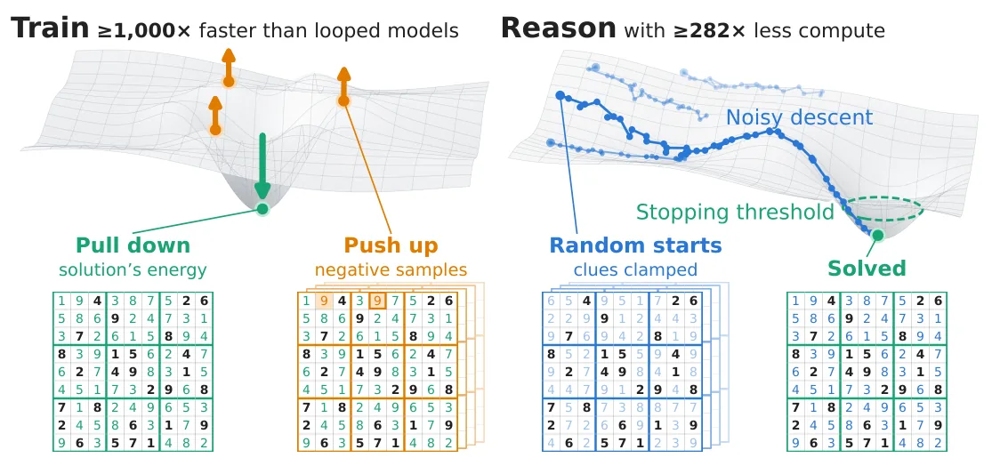
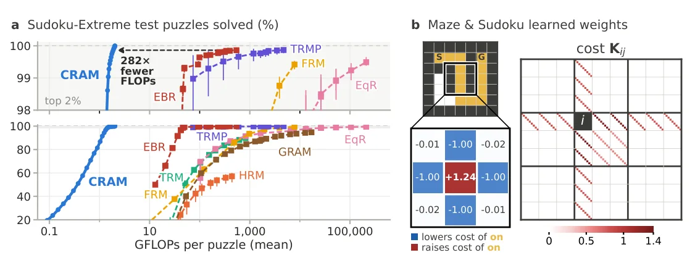
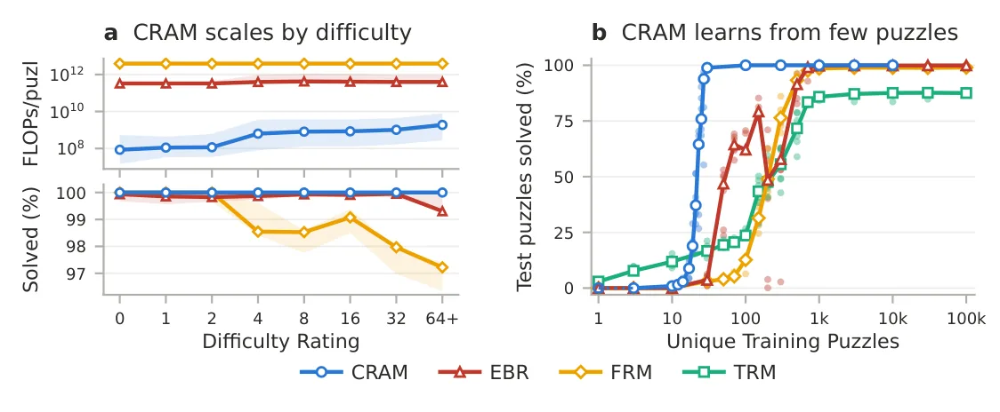
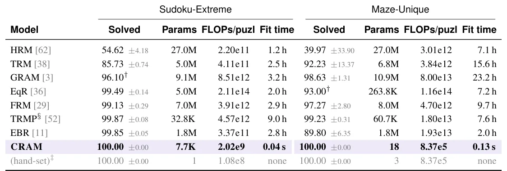

O Custo Oculto do Raciocínio Recorrente
Nos últimos anos, modelos em loop (looped models) emergiram como uma alternativa promissora ao Chain-of-Thought tradicional. A ideia central é simples: aplicar repetidamente uma camada ou bloco de camadas à entrada até que o modelo converge para uma resposta estável. Pequenas redes com milhões de parâmetros já demonstraram sucesso em puzzles lógicos como Sudoku e labirintos. No entanto, essa abordagem esconde custos computacionais proibitivos. O treinamento depende de Backpropagation Through Time (BPTT) truncado, que exige propagar gradientes através de múltiplas iterações do loop, tornando o processo lento e instável.
Além da lentidão, os motivos pelos quais esses modelos funcionam permanecem pouco claros. Muitos tentam imitar as propriedades desejáveis das redes de energia — como estabilidade garantida e parada antecipada — adicionando módulos extras ou cabeças de halting (parada) ao loop. Mas isso é como reconstruir uma casa tijolo por tijolo quando se poderia usar uma fundação sólida. Os autores questionam: por que não aprender a função de energia diretamente? Se puzzles de lógica têm uma energia correspondente que, quando minimizada, resolve o problema, por que não treinar essa energia a partir de dados?
Este paper apresenta o CRAM (Compact Reasoning Associative Memory), uma versão aprendível da energia proposta por Hopfield e Tank nos anos 80. Diferente dos modelos em loop que simulam a dinâmica de energia, o CRAM a aprende explicitamente. O resultado é um modelo que não apenas resolve puzzles, mas o faz com uma eficiência computacional que desafia a intuição atual sobre o custo do raciocínio algorítmico em redes neurais.

A Mecânica da Energia Aprendida
O coração do CRAM é uma função de energia parametrizável. Para cada célula de um puzzle (seja uma grade de Sudoku ou um nó em um labirinto), o modelo mantém uma distribuição de probabilidade sobre os valores possíveis. A energia total do estado é composta por três termos: uma entropia negativa que incentiva certezas (distribuições one-hot), uma energia de interação que modela as restrições entre células vizinhas, e um termo de entrada que fixa os dados observados do puzzle.
Matematicamente, a energia E(p) é definida como a soma da entropia de cada célula, mais a soma das interações entre pares de células, ponderada por matrizes de pesos aprendíveis K, e mais os biases que representam as pistas iniciais. Quando a distribuição de uma célula se torna one-hot (certeza absoluta), o termo de entropia desaparece, e a energia se reduz à soma dos custos das escolhas feitas. Isso conecta diretamente a inferência neural à minimização de energia clássica.
Durante a inferência, o CRAM não faz previsões diretas. Em vez disso, ele realiza uma descida de gradiente na energia. Cada célula tem um estado neuronal recorrente que evolui para minimizar a energia global. O sistema é atualizado iterativamente, ajustando as crenças das células até que a energia não possa mais ser reduzida. Diferente dos modelos em loop determinísticos, o CRAM introduz ruído durante a busca (via amostragem de Gibbs focada) para escapar de mínimos locais espúrios, permitindo que diferentes cadeias de busca explorem o espaço de soluções independentemente.
Treinamento sem Diferenciação do Loop
O ganho de eficiência mais significativo do CRAM reside em seu método de treinamento. Modelos em loop tradicionais precisam diferenciar através do processo de inferência (BPTT), o que é computacionalmente caro e instável. O CRAM evita isso completamente. Ele é treinado para baixar a energia das soluções corretas observadas nos dados e elevar a energia de soluções incorretas (negativas) geradas pelo próprio modelo.
Os autores utilizam principalmente um objetivo de pseudolikelihood (PL). Em vez de calcular a distribuição de Boltzmann completa, que é intratável, a pseudolikelihood aproxima a probabilidade do estado considerando apenas as condições locais de cada célula. Isso permite o uso de SGD (Stochastic Gradient Descent) padrão com momento, sem a necessidade de propagar gradientes através das iterações de descida de energia. O treinamento se torna essencialmente uma otimização estática dos pesos da energia, não da dinâmica temporal.
Essa abordagem tem implicações profundas. O treinamento do CRAM no Sudoku-Extreme leva apenas 42 milissegundos em uma GPU H200. Para comparação, modelos em loop equivalentes levam horas ou dias. Além disso, a pseudolikelihood permite que o modelo aprenda as restrições subjacentes do puzzle sem precisar saber explicitamente as regras. Ele descobre, por exemplo, que dois números iguais não podem estar na mesma linha, simplesmente porque as soluções válidas têm baixa energia nessas configurações e as inválidas têm alta energia.

Resultados: Velocidade e Eficiência Extremas
Os resultados experimentais do CRAM são robustos. No benchmark Sudoku-Extreme, o modelo resolve 99,996% dos puzzles de teste após apenas 42ms de treinamento. No Maze-Unique, atinge 100% de acurácia após 132ms de treinamento. Esses tempos incluem o ajuste do limiar de parada, que é determinado pela energia máxima das soluções de treinamento. A inferência é igualmente rápida: o CRAM resolve os puzzles em milissegundos, usando uma fração mínima dos recursos computacionais.
A eficiência na inferência é outro ponto forte. O CRAM usa pelo menos 282x menos FLOPs (operações de ponto flutuante) do que os modelos em loop na acurácia máxima comparável. Isso ocorre porque a descida de energia é um processo iterativo que pode parar cedo. Se um puzzle é fácil, a energia converge rapidamente. Se é difícil, mais iterações são necessárias. Essa adaptabilidade ao custo computacional é uma vantagem intrínseca das redes de energia que os modelos em loop estáticos não possuem naturalmente.
Os autores também demonstraram que o CRAM é capaz de aprender pesos que são interpretáveis e correspondem às regras lógicas dos puzzles. No Sudoku, os pesos aprendidos refletem corretamente as restrições de linha, coluna e bloco. No Maze-Unique, os pesos aprendidos descrevem um algoritmo de poda de becos sem saída. Isso sugere que a energia aprendida não é apenas uma caixa preta, mas uma representação estruturada do conhecimento do domínio.

Limitações e Escopo
Apesar dos resultados impressionantes, é crucial entender o escopo do trabalho. Os puzzles avaliados — Sudoku-Extreme, Maze-Unique, N-Rainhas e Coloração de Grafos — pertencem a uma categoria de problemas de lógica onde as restrições podem ser representadas exatamente por uma energia de pares. Isso significa que a solução pode ser encontrada minimizando uma função de energia que depende apenas de interações locais entre variáveis.
O paper admite que alta acurácia nesses benchmarks não implica escalabilidade para tarefas mais complexas, como o ARC-AGI-1, onde a resposta depende de quantidades latentes que o modelo deve calcular, como distâncias ou contagens. Os autores mostram que uma extensão latente simples do CRAM pode aprender labirintos mais difíceis, mas aprender essas quantidades latentes de forma geral, sem conhecimento prévio do design da tarefa, permanece um desafio em aberto.
Além disso, os tempos de treinamento reportados são de 'warm fit times', excluindo custos iniciais de compilação de kernel. Embora isso seja justo para comparações relativas, em cenários de produção onde modelos são carregados raramente, os custos fixos de inicialização podem ser relevantes. No entanto, mesmo considerando esses fatores, a vantagem de ordem de grandeza do CRAM sobre os modelos em loop permanece clara.

Conclusão: Energias como Base para Raciocínio
Este paper demonstra que a abordagem de energia, longe de ser uma relíquia dos anos 80, oferece um framework poderoso e eficiente para o raciocínio algorítmico em redes neurais. Ao aprender explicitamente a função de energia, o CRAM elimina a necessidade de treinamento recorrente custoso e fornece inferência adaptativa e interpretável.
Os resultados sugerem duas coisas principais. Primeiro, que energias são uma direção extremamente promissora para treinar raciocínio a partir de dados, oferecendo estabilidade e eficiência. Segundo, que benchmarks triviais como Sudoku e Maze podem ser enganosos para testar a escalabilidade de técnicas de raciocínio em loop, já que soluções simples podem resolver esses problemas com precisão total.
O CRAM não é a resposta final para todo tipo de raciocínio, especialmente para tarefas que exigem abstração profunda ou cálculo de quantidades latentes complexas. No entanto, ele estabelece um novo padrão de eficiência e clareza para problemas de restrição, mostrando que às vezes, voltar às bases matemáticas pode ser a maneira mais rápida de avançar.
O que fica
- CRAM treina em 42ms no Sudoku-Extreme, 1.000x mais rápido que modelos em loop, sem perder acurácia.
- O modelo usa 282x menos FLOPs na inferência, adaptando o cálculo à dificuldade do problema.
- A energia aprendida revela pesos interpretáveis que correspondem às regras lógicas do enigma.
- O método evita BPTT, usando objetivos locais como pseudolikelihood para treinamento eficiente.
Paper original: Classical Energies Learn to Reason 1,000x Faster than Looped Models
Comentários
Nenhum comentário ainda. Seja o primeiro.